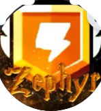

Brawl Stars Norge Wiki
Brawl Stars Norge Wiki
Midnight Zephyr

| Aktiv | Ja |
|---|---|
| Stiftet | 01.04.2018 |
| Medlemmer | ~320 |
| Flest bans | BigW |
| Leder | Lobb |
| Underklubber |
MZ 2
AZ UZ AZ |
Midnight Zephyr
Bakgrunn
Midnight Zephyr ble stiftet 1. april 2018, og har nesten alltid vært nummer 1 i Norge siden da. MZ består av 5 klubber (MZ, MZ2, AZ, UZ og NZ) og en Discord-Server.
Klubben
Klubben ble stiftet 1. april 2018 av Philraider.
Discord Server
Discord Serveren har rundt 320 medlemmer og er den største norske Discord serveren.
Prestasjoner
- Nummer 1 klubb i Norge
- Største norske Discord-server
- Lengst levde klubb
- Fostret mange store norske talenter